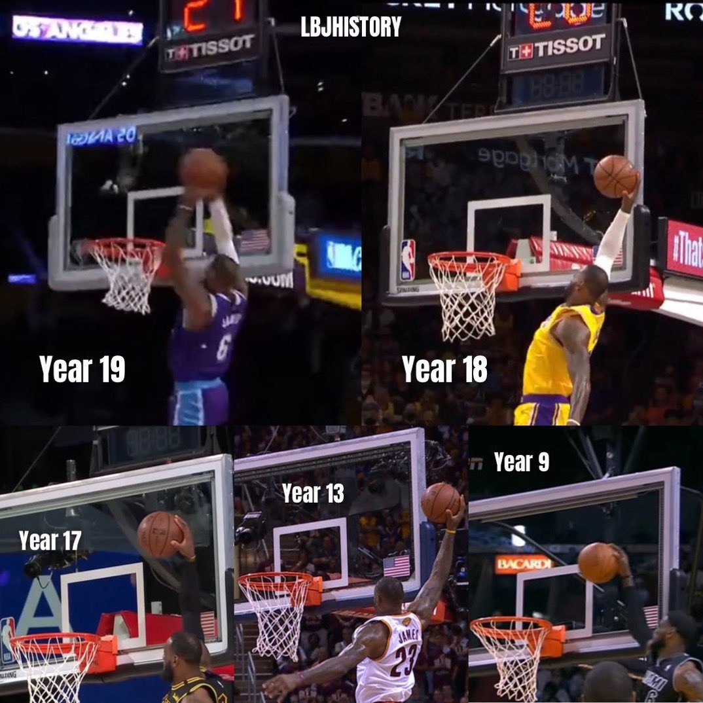

Lebron James Highlights
Age is Just a Number
Age is just a number for the great LeBron James. At 37 years old, LeBron is playing some of the best basketball of his career. By numbers alone, he’d be an easy candidate to win the NBA MVP award. Yet due to the season-long struggles of the 18-19 Los Angeles Lakers, James is being overlooked as a bonafide candidate. However, even if the Lakers fail to turn things around, there’s a strong case to be made for the King still winning his fifth MVP. And he wouldn’t be the first player to win the award despite playing on a losing club. The first half of James’ fourth season in LA didn’t go as planned. Ankle and abdomen injuries cost him 10 total games, while a brief stint in health and safety protocols and a suspension cost him an additional one game each. But from the start of December onward, the future Hall of Famer has been playing at a whole new level. In 14 December contests, James averaged 30.7 points on 55.5% shooting from the field and 40.4% from three. He ended the month scoring 30 or more points in seven straight games, his longest such streak since 2013. The last of which came during a 139-106 win over the Portland Trail Blazers, where the new 37-year-old finished with 43 points, 14 rebounds, two steals, two blocks, and zero turnovers. Thanks to an amazing month, LeBron now owns season averages of 28.6 points (which would place him second in the NBA behind Kevin Durant if he had enough games to qualify), 7.5 rebounds, 6.6 assists, 1.7 steals, and 1.1 blocks. Out of those five stats, only assists don’t exceed his career averages.
Ranking The King's Top 5 Dunks of All Time
A dunk is worth just two points, but the best dunkers in the world
always find ways to make it feel like more. From signature in-game
slams to unforgettable posterizations to you-had-to-be-there dunk
contest moments, players from generations past and present have left
an indelible mark on the game with their ability to finish at the
rim. At 37-years-old and in his 19th season in the NBA, LeBron James
continues to dazzle the league. More than just his skills, the
four-time MVP is still showing almost the same kind of athleticism
that was his hallmark upon entering the league straight out of high
school. The King apparently still has the hops.

In a story posted on his Instagram account, LeBron James features
images of his high-leaping plays at different points in his career.
Year 19, 18, 17, 13 and 9 all show King James skying above the rim
for rim-rattling dunks. When given the chance, he still resembles
the overpowering L-Train moniker of his younger days. The four-time
champion going downhill is still one of the most fearsome forces in
the NBA. There’s almost no stopping him with his combination of
power, guile and skill when going to the rack. In addition to his
Sportscenter-worthy dunks, LeBron James is just as flashy with his
blocks. His trademark chase-down dunks regularly make the headlines.
Perhaps no other player gets recognized for blocks more than King
James. The soon-to-be 18x All-Star has also moved into 7th in the
all-time assists ladder. He is the only player to get into the top
10 in scoring, assists and steals. No player is even in the top 30.
However, do you think he ever participated in the
- Eastern Conference Semifinals Game 4 — Cleveland Cavaliers vs. Boston Celtics As Kevin Harlan put it perfectly: “LeBron James with no regard for human life!” This is definitely one of the most memorable dunks LeBron James has ever thrown down. Defensive Player of the Year Kevin Garnett was just a tad bit late, and it ended up being the perfect Kodak moment:
- March 18, 2013 — Miami Heat vs. Boston Celtics No words needed. The poster, the stare down, the atmosphere. The King literally shocked TD Garden and the media on this eventful night. Although he received a technical foul quickly after the play, it was warranted due to the fact that the dunk was just plain mean. James even expressed later on that the dunk was much sweeter because Jason Terry talked so much.
- November 03, 2006 — Cleveland Cavaliers vs San Antino Spurs Tim Duncan was a little bit too fundamental on this one. He probably could have got the charge call if he had actually flopped. The most ridiculous part of this dunk isn't the fact that LeBron nearly cleared the 6'11'' center, it's that he took off from right around the dotted line from inside the paint. This dunk is absolutely insane on a lot of levels, but most of all because again LeBron makes it look way too easy. I bet Tim Duncan learns something from his buddy Tony Parker and just moves out of the way next time.
- November 03, 2006 — Miami Heat vs Chicago Bulls LeBron's epic dunk over John Lucas almost made it to the number one spot, but it fell just short. John Lucas stands at 5'11'', which by NBA standards is pretty short. But when you watch the dunk and realize that LeBron cleanly cleared him without really trying, you understand just how impressive jumping over a human being really is. Not only did he jump over a decent-sized man, but he also got the alley-oop with one hand and threw it down with quite a bit of force. If you're a hater of this dunk, you're not allowed to comment until you've caught an alley-oop while jumping over someone 5'11''.
- Feb. 6, 2020 — Los Angeles Lakers vs. Houston Rockets This one just hits all the feels. It’s crazy to think about the timing, the execution, and the sentimental value that this dunk brought upon all Lakers fans. Everyone remembers how it was eerily similar to one that Kobe Bryant pulled off 19 years ago, with the same reverse windmill in the third quarter on a fast break. Therefore, this dunk will probably go down as the most iconic one James has ever thrown down in a Lakers uniform: